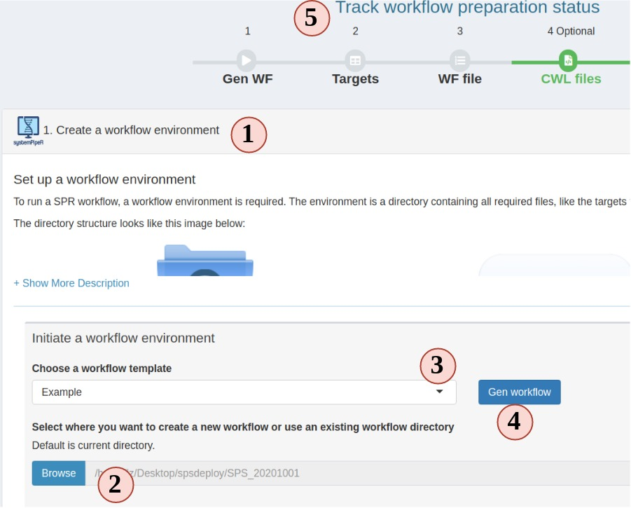
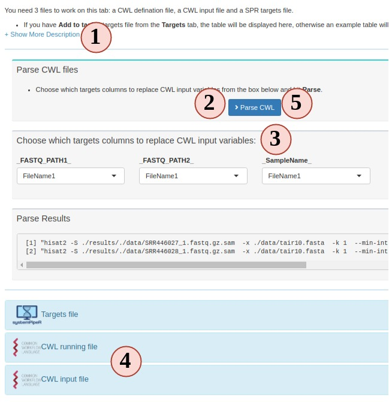
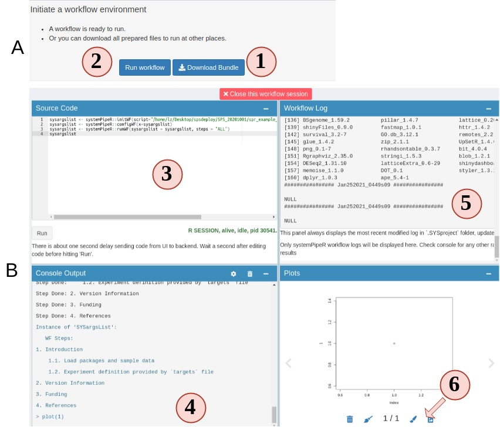

Workflow
Workflow management
The workflow management module in SPS allows one to modify or create the
configuration files required for running data analysis workflows in
systemPipeR (SPR). This includes
three types of important files: a sample metadata (targets) file, a
workflow file (in R Markdown format) defining the workflow steps, and workflow running
files in Common Workflow Language (CWL) format. In SPS, one can easily create
these files under the “Workflow Management” module, located in navigation bar
on the left of the dashboard (Fig2).
The current version of SPS allows to:
- create a workflow environment;
- create and/or check the format of targets / workflow / CWL files;
- download the prepared workflow files to run elsewhere, like a cluster;
- directly execute the workflow from SPS.
1. setup a workflow

Figure 3. A. Workflow Management - Targets File
- In the workflow module, read the instructions and choose step 1. Step 1 should be automatically opened for you on start.
- Choose a folder where you want to create the workflow environment.
- Choose a workflow template. These are SPR workflows and mainly are next-generation sequencing workflows.
- Click “Gen workflow” to create the workflow project.
- You should see a pop-up saying about the project path and other information. Clicking the pop-up will jump you to the step 2. The status tracker and banner for step 1 should all turn green.
2. Prepare a target file
The targets file defines all input file paths and other sample information of
analysis workflows. To better undertand the structure of this file, one can
consult the “Structure of targets
file”
section in the SPR vignette. Essentially, this is the tabular file representation
of the colData slot in an SummarizedExperiment object which stores sample
IDs and other meta information.
The following step-by-step instructions explain how to create and/or modify targets files using RNA-Seq as an example (Fig.3 A):
- Your project targets file is loaded for you, but you can choose to upload a different one.
- You can edit, right click to add/remove rows/columns (The first row is treated as column names).
- SPR target file includes a header block, that can also be edited in the SPS app. Each headers needs to start with a “#”. Header is only useful for RNA-Seq workflow in current SPR. You can define sample comparison groups here. Leave it as default for other projects.
- The section on the left provides sample statistics and information whether files exist inside the workflow project’s
datadirectory. Choose any column you want from the dropdown to check and watch the statistics bar change in this section. - statistic status bar.
- Clicking on “Add to task” can help you to check if your target file has any formatting problem. You should see a green success pop-up if everything is right. Now your target file is ready and you can click “save” to download it and later use in a SPR project.

Figure 3. A. Workflow Management - Targets File
3. Prepare a workflow file
In SPR, workflows are defined in Rmarkdown files, you can read details and obtain them here.
Now let us follow the order below to see how SPS helps you to prepare a workflow file for a RNAseq project (Fig.3 B):
- Your project workflow file is loaded for you, but you can choose to upload a different one.
- The workflow structure is displayed in a tree-leaf-like plot.
- Check all steps in the workflow that you want to include. You can skip (uncheck) some steps but it may cause the workflow to fail. Read more SPR instructions before do so.
- Clicking on the “Plot steps” will show a flow chart of what the step execution orders will be when you run the workflow in SPR.
- Clicking “Report preview” generates a preview of what the final report will look like for current RNAseq workflow (hidden in Fig 3.B), but in the preview, no code is evaluated.
- If you are satisfied with your workflow file, click “Add to task” to save your workflow file.

Figure 3. B. Workflow Management - Workflow File
4. Prepare CWL files (optional)
In the new version of SPR, all individual system workflow steps are called by the CWL files. Each SPR workflow has a set of CWL files and normally users do not need to make any change. In case you want to learn more about CWL and create some new CWL files, Step 4 is a good place to practice.
To run a CWL step in SPR, 3 files are required:
- targets: to determine how many samples will be run and sample names.
- CWL running file: can be translated to bash code;
- CWL input: variables to inject into the running file
SPR is the parser between R and CWL by injecting sample information from targets
to CWL input file and then CWL parser translates it to bash code.
- Most people are not familiar this part, so read instructions carefully.
- Your project targets has been loaded for you, and an example CWL running and input for hisat2 is also loaded for you. Directly parse the code. See what commandline code you get.
- Change the targets injecting column, and parse again, see what has changed.
- You can edit the CWL running and input files
- Try to parse the new file and see what has changed.
- If new CWL files has been created, you can edit workflow Rmd files by adding your new steps.

Figure 3. C. Workflow Management - CWL File
5. Run or finish workflow preparation
Up until this step, congratulations, the workflow is prepared. You can choose to download the workflow project files as a bundle or continue to run the workflow.

Figure 4.A.B Workflow Runner
- On step 5 you can choose to download the prepared workflow or directly run the workflow. However, if you do not have the required commandline tools, workflow will most likely fail. Make sure you system has these tools (Read about these tools).
- Open up the runner. It is a “Rstudio-like” interface.
- Code editor. Required workflow running code is pre-entered for you. You can simply hit “Run” to start. Of course, you can delete the default code and run random R code.
- Output R console.
- Workflow running log.
- View any plot output. and send a copy of your current plot to SPS Canvas tab or download it.